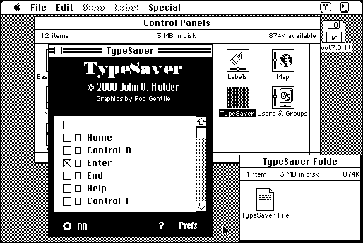

Download
TypeSaver1.01.zip (274K) TypeSaver 1.01 repackaged into a zipped hfs disk image and checksum file. The disk image can be mounted with Mini vMac.
TypeSaver1.01.sea.hqx (406K) TypeSaver 1.01 in the original format.
copyright: John V. Holder
mod date: Dec 22, 2000
license: shareware
last known url
(gone)
When installed “every key you press (you can define which keys to save or ignore) will be saved to a file”. “This is an excellent way to make sure you won't lose any typing because of a crash”. For System “7 on up”.

If you find these downloads useful, please consider helping the Gryphel Project, which hosts them.
Here are the md5 checksums for the downloads, signed with Gryphel Key 5:
--------- GRY SIGNED TEXT --------- a9526ffd95452a0f869c3c32026bacf0 TypeSaver1.01.zip 02c6b314d8258fd3e7adf4b91d811b1e TypeSaver1.01.sea.hqx ------- BEGIN GRY SIGNATURE ------- Gry/4Xa8CFcUzxdN/E1X0w1ggW+13CLCN+fOXj9Tm7tT9OP5syvFHSl2TsEt3o47 uo7e3va1gsYu1L9oHpv4YhDE2wunBcgwFrct2CIIFg4ABaIf6GuDQ4dKlPUNOcZb EYOi+GXo6C606YG/ZnSEMGQibb4fmoQVkSiCcBPDA14C3VaSO/N6egg38TVyOYV2 -------- END GRY SIGNATURE --------